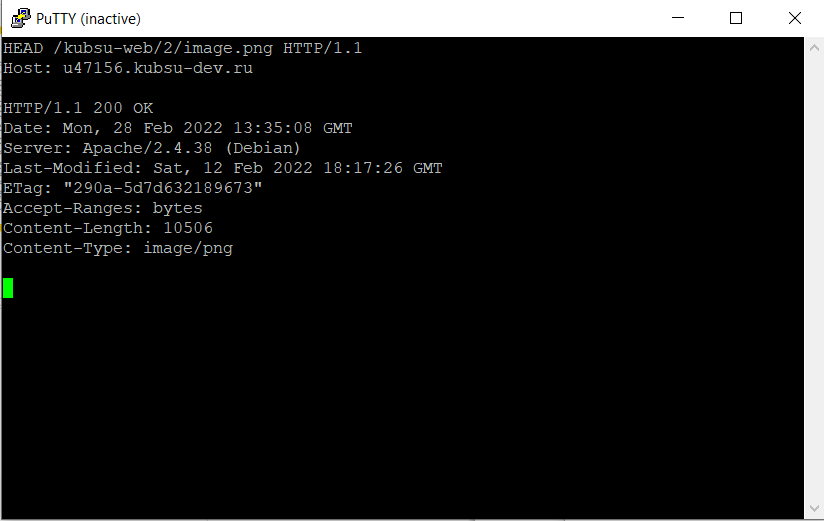
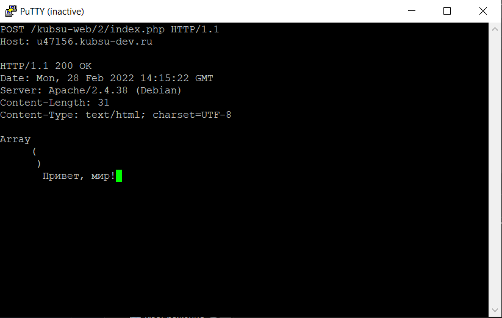
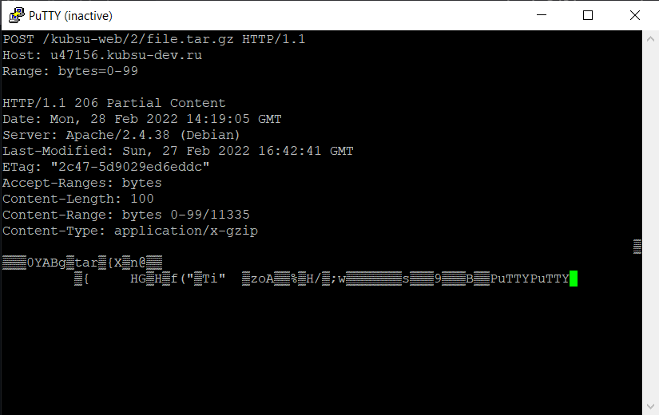
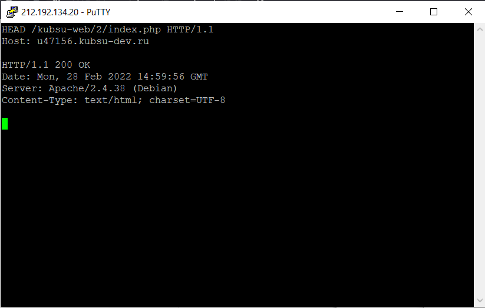

Выполнена команда git pull для каталога files

Получение главной страницы методом GET в протоколе HTTP 1.0. Расшифрую ответ сервера:
Отправляю запрос с указанием учебного хоста, на котором лежат все мои файлы.
Получаю страницу из первого задания
Чтобы узнать размер файла воспользуюсь методом запроса HEAD, который возвращает только заголовки ответа, без тела. Размер файла равен 11335 байт.
Для того, чтобы узнать медиа тип файла, я воспользуюсь снова методом HEAD, так как мне нет смысла затрачивать ресурсы и загружать саму картинку, как было бы в случае использования GET метода.
Content-type: image/png как раз-таки указывает, что файл - это изображение в формета .png
Post-запрос на сервер, получение пустого массива параметров запроса, а также сообщения "Привет мир!"
Для того, чтобы получить определенное количество байт, используем специальный заголовок Range:
В нем указываем количество байт от 0 до 99, чтобы получить первыее 100 байтов.
Отправляем HEAD запрос, чтобы узнать кодировку. В данном случае видим UTF-8